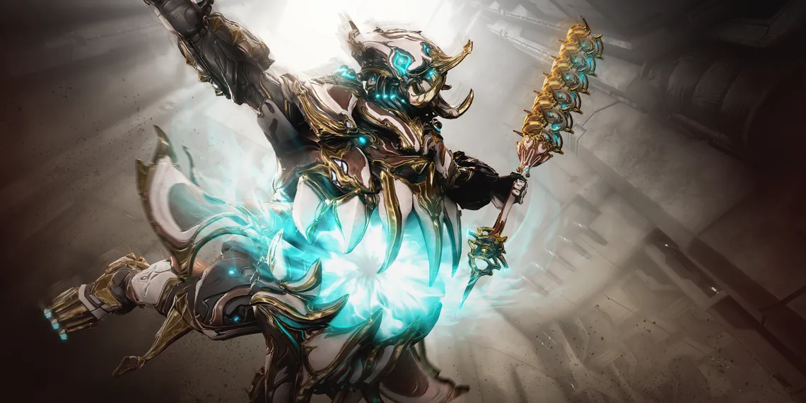

Introduction to Grendel Prime
Story of Grendel Prime
"We are losing this war, you say. You whisper that my Warframes are too genteel. Very well. Away with chivalry. Let us have monsters. The law of club and belly, hunger and smoke. Beasts of cave and glut. I spread for you a cannibal feast. A toast, to the valor of mere appetite! You tremble! But the drool is on your chins. For you birthed him, in all his innocent obscenity. This... is what you ordered. Grendel."-Ballas.
